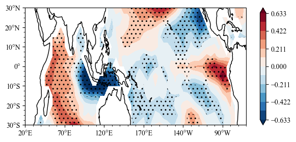

Multivariate Linear Regression¶
Sacpy.MultLinReg¶
Math Euqation¶
\[y[idx] = slope[idx,0] * x[0] + slope[idx, 1] * x[1] + ... + intcp[idx]\]
parameter:¶
x (np.ndarray): shape = (time, N) ; N is Number of factors
y (np.ndarray): shape = (time,*number)
cal_sim (Bool,default=True): Whether to call function multi_linreg
Note:¶
x’s dim0 must equal to y’dim0 !
Attribute:¶
Example¶
Get the influence of IOD and clean the influence of simultaneous ENSO
[2]:
%load_ext autoreload
%autoreload 2
import numpy as np
import sacpy as scp
import matplotlib.pyplot as plt
Get Nino3.4 Index and IOD Index¶
[3]:
sst = scp.load_sst()['sst']
# get ssta
ssta = scp.get_anom(sst,method=1)
# calculate Nino3.4
Nino34 = ssta.loc[:,-5:5,190:240].mean(axis=(1,2))
# get IOD index
IODW = ssta.loc[:,-10:10,50:70].mean(axis=(1,2))
IODE = ssta.loc[:,-10:0,90:110].mean(axis=(1,2))
IODI = +IODW - IODE
Multivariate Linear Regression Calculation¶
[4]:
X = np.vstack([Nino34,IODI]).T
# multiple linear regression
MLR = scp.MultLinReg(X,ssta)
Plot the significance test and IOD index slope¶
[5]:
import sacpy.Map
import cartopy.crs as ccrs
fig = plt.figure(figsize=[7, 3])
ax = plt.axes(projection=ccrs.PlateCarree(central_longitude=180))
lon ,lat = np.array(ssta.lon) , np.array(ssta.lat)
m = ax.scontourf(lon,lat,MLR.slope[1])
n = ax.sig_plot(lon,lat,MLR.pv_i[1],color="k",marker="..")
ax.init_map(stepx=50, smally=2.5)
plt.colorbar(m)
[5]:
<matplotlib.colorbar.Colorbar at 0x1498a6a90>
